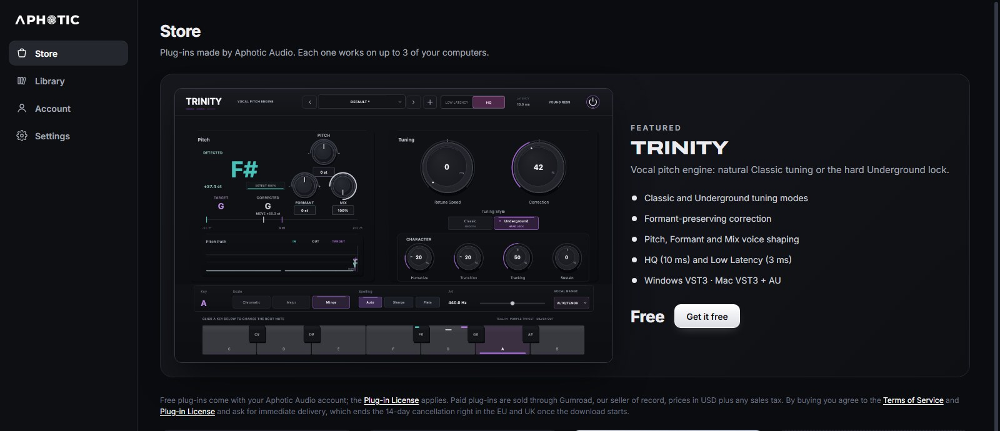

Pitch, tone and air for every vocal.
Three plug-ins for Windows and Mac, from free pitch correction to a full analog channel strip. One free app installs and updates them.
One vocal chain
Use them on a vocal in this order: tune it, give it body and weight, then open up the top. Each one also works on its own, on any track.
-
Pitch
TRINITY
Pitch correction that goes from natural to hard-locked, with formant-preserving correction that keeps the voice sounding like the singer.
Free with an Aphotic Audio account. Installs in one click.
Features and specs
Classic follows the singer and leaves the expression in. Underground snaps every note to the key for the locked sound modern rap vocals are built on.
Set the key and scale on the keyboard, pick a vocal range, and watch the pitch path show what came in, where it's headed and what came out.
- Classic and Underground tuning styles
- Retune speed, correction, humanize, transition, tracking and sustain
- Pitch, formant and mix shaping
- Key, scale, A4 reference and vocal range
- Latency
- HQ 10 ms, Low Latency 3 ms
- Formats
- Windows VST3, macOS VST3 and AU
- Version
- 1.0.8
- Computers
- Up to 3 per license
-
Tone
IRON & GLASS
A British console preamp and EQ, into a tube optical compressor that holds a vocal steady without squashing it.
$33Buy for $33One-time purchase. Use your Hub email at checkout, then install in Aphotic Hub.
Features and specs
Iron is the console half: a Class-A preamp with transformer iron you can drive from clean to thick, then an EQ with curves fitted to the original circuit.
Glass is the tube optical compressor. Blend it in with the mix knob, keep the low end from pumping it with the sidechain high-pass, and put it before or after the EQ.
- Mic and line input modes with iron drive
- Fixed, Manual and Fix/Man compressor timing
- VU meter for input, gain reduction and output
- A/B compare and presets
- EQ
- Air 12 kHz, mid 360 Hz to 7.2 kHz, low 35 to 220 Hz, high-pass 50 to 300 Hz
- Oversampling
- Off, 2x, 4x or 8x
- Formats
- Windows VST3 (64-bit), macOS VST3 and AU (Apple silicon and Intel)
- Version
- 1.22.2
-
Air
AIR
One knob that lifts the top of a vocal, mix or instrument and never turns harsh: esses get less lift than everything else.
$30Buy for $30One-time purchase. Use your Hub email at checkout, then install in Aphotic Hub.
Features and specs
A dynamic shelf set above the harsh zone, plus an octave-up sheen for sources that came in dull. Built-in smoothing means pushing it harder only gets smoother.
- 16 presets for vocals, mix bus, master and instruments
- Click-free preset switching
- Live AIR and SMOOTH meters
- Resizable interface
- Latency
- Zero
- Formats
- Windows VST3 (64-bit), macOS VST3 and AU (Apple silicon and Intel)
- Version
- 1.6.1
- Computers
- Up to 3 per license
Aphotic Hub installs every plug-in for you.
Version 1.2.0. Windows 10 or 11 (64-bit), or macOS on Apple silicon or Intel.
It's free. Sign in once and click Install: each plug-in lands where your DAW looks for it, activates on your computer, and updates itself when a new version comes out. Your licenses move with you to a new computer.

Download the Hub
Run the installer. If Windows says it protected your PC, click More info, then Run anyway.
Create your account
Confirm your email with the 6-digit code we send. Bought a plug-in? Use the email you paid with, or redeem the licence key from your receipt.
Install your plug-ins
TRINITY installs in one click. Plug-ins you bought are already in your library.
Open your DAW
Rescan plug-ins and load them on a vocal. The Hub keeps them up to date.
Help
Something else? Email theyoungress@gmail.com.
I paid. Where's my plug-in?
Install Aphotic Hub and sign in with the email you used at checkout, or create an account with it and enter the code we email you. The plug-in appears in your Library within a minute of paying: click Install. Your receipt comes from Gumroad. Buying from inside the Hub? Its Buy now button opens Gumroad with your account email already filled in.
I used a different email at checkout.
Open Aphotic Hub, go to Library and paste the licence key from your Gumroad receipt under Bought on Gumroad with another email?. The plug-in moves into your account straight away. Stuck? Email theyoungress@gmail.com with your order number.
How many computers can I use?
Each plug-in activates on up to 3 of your computers. To free a slot, deactivate a computer on the Hub's Account page (up to 3 moves per plug-in each month; email us if you need more).
Which DAWs and systems work?
Any DAW that loads VST3 plug-ins on Windows 10 or 11 (64-bit). On a Mac (macOS 11 or later, Apple silicon or Intel) every plug-in comes as VST3 and AU, so it also works in Logic Pro and GarageBand.
My computer warns me about the installer.
The Hub isn't signed with a paid certificate yet, so Windows shows "Windows protected your PC": click More info, then Run anyway. On a Mac, open System Settings, then Privacy & Security, and click Open Anyway once.
Can I get a refund?
If a plug-in doesn't work on a computer that meets its requirements and we can't fix it, contact us within 14 days of buying and we'll refund you. The details are in the Terms of Service.
Who handles the payment?
Gumroad is the seller of record. It takes the payment, adds any sales tax or VAT for your country and sends your receipt. Aphotic Audio never sees your card details.